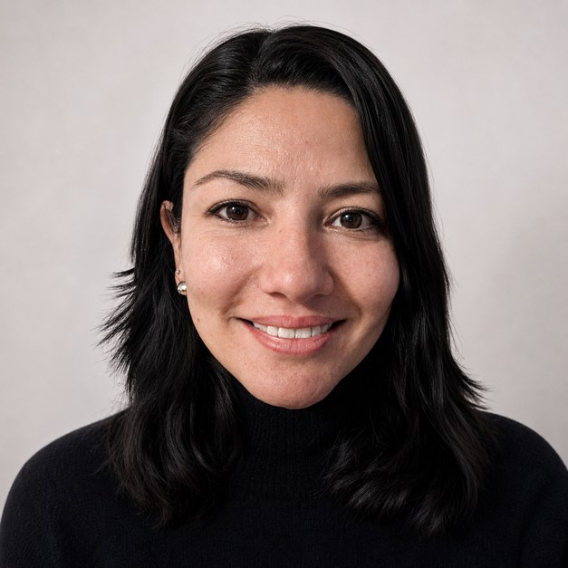

Organización
Estructuro información y procesos para convertir necesidades en soluciones claras.
Sobre mí
Soy archivista, docente y gestora del conocimiento. Mi trayectoria combina educación universitaria, gestión documental, investigación aplicada y creación de contenidos; esa experiencia en organización, comunicación y procesos también nutre mi trabajo con negocios y emprendimientos.

Soy Magíster en Gestión Documental y Administración de Archivos por la Universidad de La Salle y Archivista de la Universidad de Antioquia. He trabajado en docencia, asesoría metodológica, consultoría e investigación aplicada.
Actualmente ofrezco servicios digitales para negocios y emprendimientos en Estados Unidos y Colombia, con atención en inglés y español.
Estructuro información y procesos para convertir necesidades en soluciones claras.
Años de trabajo acompañando personas, proyectos y procesos de aprendizaje.
Servicios orientados a negocios y emprendimientos en ambos países.
La comunicación puede desarrollarse en cualquiera de los dos idiomas.
Puedes explorar mi experiencia profesional, consultar mi trayectoria académica y conocer los contenidos que comparto con la comunidad archivística.
Conoce mi perfil profesional, experiencia y conexiones.
Consulta mi currículo académico y de investigación en la plataforma de Minciencias.
Visita mi canal de YouTube con contenidos sobre archivística y gestión documental.